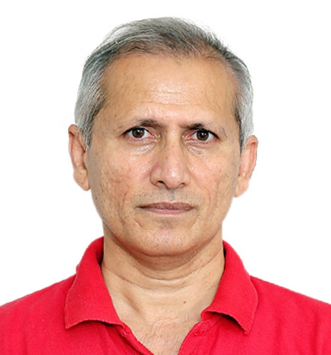

Our Founding Members

DR ATTA UL ALEEM BHATTI
Neuro Spine and Endovasular Neurosurgeon,
Founding Chairman, President & CEO of
“Neuro Health Care 4 LMIC”
Dr. Bhatti is a hybrid neurospine and endovascular neurosurgeon trained from AKUH and University of Zurich. His main areas of interest are brain hemorrhage, brain tumors and spine problems. His clinical interests include spinal degenerated diseases, brain & spine tumours, trauma, micro-neurosurgery, AVMs, aneurysms, tumor embolization, carotid stenting, peripheral vascular disorders and hydrocephalus. Additionally, he is actively involved in stroke therapy including intra- arterial fibrinolysis, mechanical thrombectomy, microangioplasties, super selective WADA, inferior petrosal sinus sampling, temporary and permanent balloon occlusions, embolization of skull base tumors and craniofacial lesions and neuro rehabilitation.
Besides completing a 2-years fellowship in endovascular neurosurgery/interventional neuroradiology from Zurich he has received trainings in micro-neurosurgery, spine, vascular, neuroradiology, neuroanatomy, neurooncology from various places including Hanover (Germany), Helsinki (Finland), and Montpellier (France).
Dr. Bhatti has vision and is dedicated to provide clinical, teaching and training services to masses in LMIC. His future professional targets include providing comprehensive neuro health care to masses in underprivileged parts of the globe as well as improvement in diagnostics, nursing, operating, ICU and neuro rehabilitation services. Global neurosurgery in LMICs, brain hemorrhage care, brain tumors management, spinal problems and disaster management are his main focus to help millions in need of neuro care.
In 2009, he established the first private sector neurosurgery unit at Agha Khan Hospital in Dar es Salaam, Tanzania. Dr. Bhatti is currently based in Geneva and has established an organization “Neuro Health Care 4 LMIC” and looking forward to starting up neurosurgical and neurointervention services as well as upgrading the capacity of already existing setups in LMIC.

DR. BERND DAEUBLER
Neuroradiologist,
Co-founder and COO of "Neuro Health Care 4 LMIC"
Dr Daeubler is a distinguished radiologist specializing in neuroradiology, particularly in diagnostic neuroradiology. With extensive training in Germany and Switzerland, he attained his expertise in diagnostic neuroradiology at
the University of Zurich. Dr. Daeubler holds board certifications in radiology and neuroradiology in Germany, Switzerland, and Europe, as recognized by the European Society of Neuroradiology (ESNR:www.esnr.org).
Throughout his career, he has garnered vast experience in neuroradiology and radiology, having served at the Department of Neuroradiology at the University of Zurich, Switzerland, as well as in private practices and radiology
departments in Germany. His primary areas of focus encompass stroke, degenerative diseases, epilepsy, and brain tumors. In the realm of spinal conditions, he specializes in degenerative disorders like osteoarthritis, spondylarthrosis, herniated discs, and
trauma-related spinal injuries.
Dr. Daeubler expertise extends to advanced techniques such as CT perfusion for stroke diagnosis and post-thrombectomy follow-up, as well as the management of neurological and neurosurgical conditions like aneurysms and tumors.
Passionate about education, he relishes teaching neuroanatomy and neuroradiology while remaining dedicated to continuous learning.
Driven by a vision to extend clinical teaching and training services to underserved regions in low- and middle-income countries (LMICs), Dr. Daeubler, alongside Dr. Bhatti, aspires to deliver comprehensive neuro-healthcare to
marginalized populations worldwide. Their shared goals encompass enhancing diagnostic, nursing, surgical, intensive care, and neuro-rehabilitation services. Dr. Daeubler's focus areas in LMICs include global neuroradiology diagnostics, brain hemorrhage
and tumor management, spine disorders, and disaster response.
Currently based in Germany, Dr. Daeubler has co-founded Neuro Health Care 4 LMIC with Dr. Bhatti, aiming to establish neuroradiology services and bolster the capacity of existing facilities in LMICs, thus uplifting millions in
need of neurological care.

HALEEM UR RASHEED
Executive Director at
“Neuro Health Care 4 LMIC”
As a dynamic leader with a rich and diverse background, Haleem ur Rasheed brings a unique blend of expertise to the role of Executive Director at Neuro Health Care 4 LMIC. With an MBA specializing in Management Information Systems (MIS), Mr. Rasheed's career journey spans across multiple fields—starting from finance and taxation, transitioning into administrative leadership in the telecommunications sector, and eventually leading to research and data analysis roles.
Driven by a passion for knowledge, Mr. Rasheed ventured into IT and developed a strong interest in cutting-edge technologies. His fascination with neurology and commitment to continuous learning now shape his vision for growth and innovation at Neuro Health Care 4 LMIC. With a multidisciplinary background and research focus, he brings fresh perspectives that align with the organization’s mission to enhance neurological care through strategic leadership and data-driven insights.